Skybox
Une Skybox permet de créer un ciel dans les jeux vidéo, il en existe deux les Skybox 2D et les Skybox 3D.
SkyBox 2D
Crée une skybox avec blender
Pour faire une Skybox 2D, nous allons utiliser Blender.
Dans Blender ajouter les add-ons suivant, ils sont de base sur Blender. (pour aller sur les add-on allez sur Edit->Preferences puis add-on)
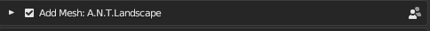
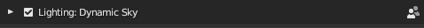
Appuyer sur "N" pour faire défiler le menu create et pouvoir crée ajouter un Landscape et un ciel.
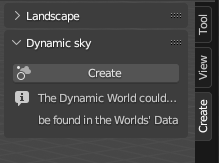
Ajouter ensuite le ciel crée dans la scène et assurer vous bien d'être en Renderer dans les viewport shading (le cercle tout à droite).

Dans les Properties (en bas à droite de l'écran) allez sur World.
Cliquer sur le globe où est écrit world et sélectionner "Dynamic_1".


Vous pouvez ajouter un landscape pour avoir des montagne en arrière plan.
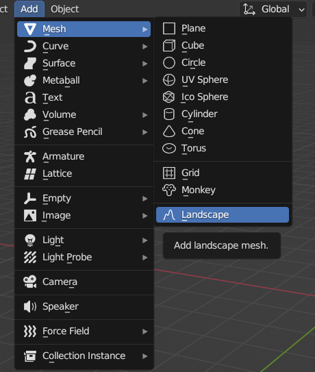
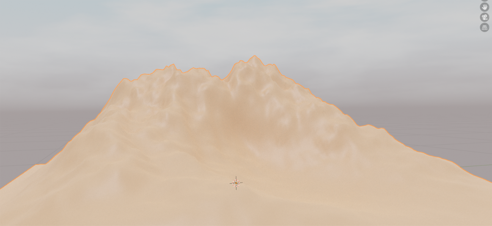
Mettre 6 Caméra pour capturer un cube de la scène afin de pouvoir capturer tout la scène.
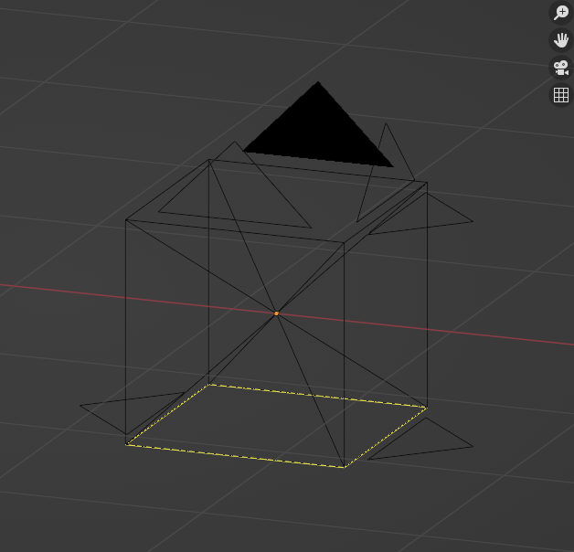
Changer la résolution et la focal pour bien former un cube.
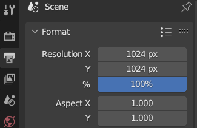 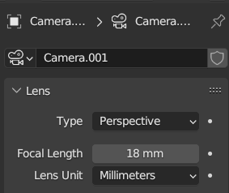
Nommer vos fichiers
Pour que le moteur fasse le lien entre vos 6 texutre il faut respecter les noms des fichiers.
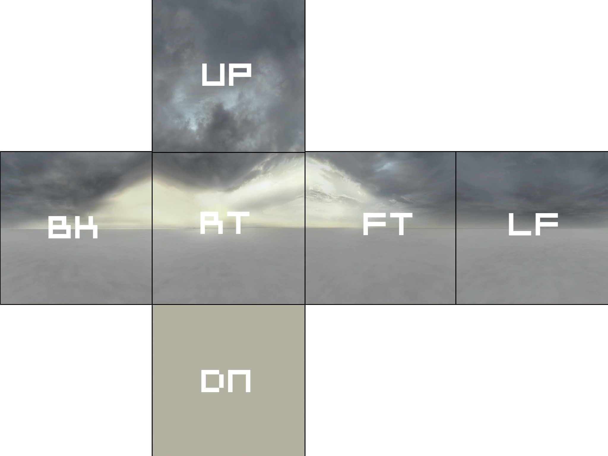
Les 6 textures doive avoir les noms suivante.
materials\skybox\skybox_exempleup.vmf
materials\skybox\skybox_exempleft.vmf
materials\skybox\skybox_exemplelf.vmf
materials\skybox\skybox_exemplert.vmf
materials\skybox\skybox_exempledn.vmf
materials\skybox\skybox_exemplebk.vmf
Appliquer la skybox sur Hammer
Pour changer la skybox.
Allez dans le menu Map->Map Properties.
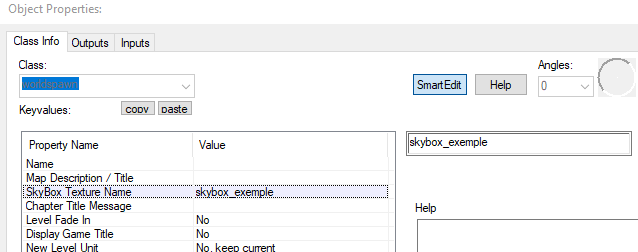
SkyBox 3D
Crée un décor à part du reste du niveau.
Placer une sky_camera.
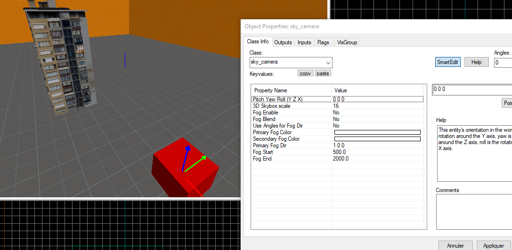
Exemple de Skybox 3D.
steamapps\common\sourcesdk_content\hl2\mapsrc\sdk_d1_trainstation_02.vmf.
Dans le dossier "sourcesdk_content" nous avons une liste de cartes.
Dans la carte mapsrc\sdk_d1_trainstation_02.vmf nous voyons la Tour de Cité 17 du jeu Half-Life 2 qui est mise à part du reste du décors.